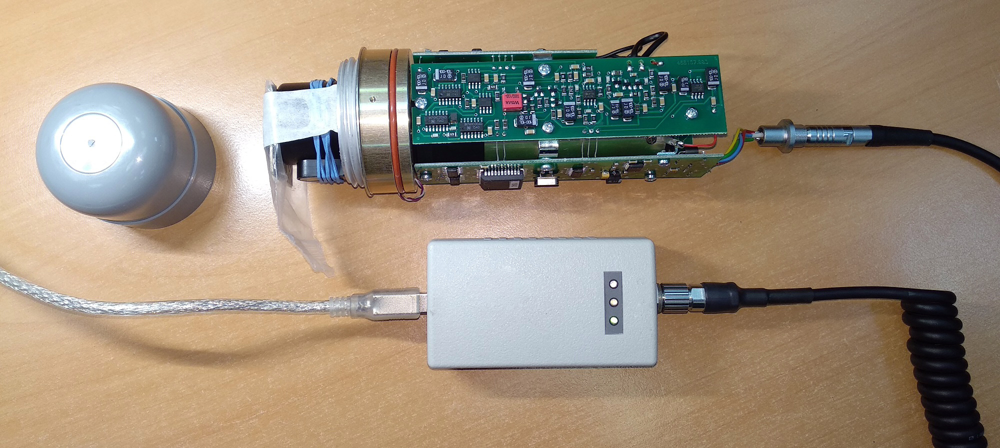

БДКГ-04
-
Наклеить на прибор наклейку с номером. В базу настройки БДКГ-04 и в перечень записать дату настройки, серийный номер и ФИО регулировщика.

-
Откусить выступающие ножки трансформатора
-
Перепроверить установленные коэффициенты:
Должны стоять такие коэффициенты:1U 0.5 2U 0.5 3U 1.0 4U 1.0 5U 1.0 Подключить БД к технологическому БОИ

- При включении нажать и удерживать кнопку
- Нажать три раза , на экране появится "---":
- Два раза нажать кнопку
- Набрать "718", для этого с помощью клавиш и выбирается цифра, а спомощью выбирается следующая позиция
- После ввода последней цифры, нажать
- Нажать и удерживать кнопку , появится ".1."
- Нажимая кнопку , выбрать седьмой режим
- Переключение коэффициента осуществляется кнопкой , значение коэффициента изменяется кнопками и

Должны стоять такие коэффициенты:
1U 0.5 2U 0.5 3U 1.0 4U 1.0 5U 1.0 -
Записать внутренние номера и дату.
- Подключить БД к адаптеру USB
- Запустить программу BackgroundCalibration. Дозиметр подключится автоматически
- Нажать "Запись идентификационных данных"
- Записать серийный номер, месяц и год производства

 Если перед тем, как нажать "Запись..." НЕ выделять строку с прибором, Background сам подставит сегодняшнюю дату
Если перед тем, как нажать "Запись..." НЕ выделять строку с прибором, Background сам подставит сегодняшнюю дату -
Проверить ток потребления: должен быть примерно 20 мА
Для того, чтобы измерить ток, у меня есть специальный адаптер USB с разрывом питания и выходом на мультиметр: -
Установить Uвыс резисторами R7 и подстроечным R8 на плате преобразователя напряжения по показаниям от ОСГИ 137Cs:
Значение мощности дозы для Cs135 №2910:???Проверить скорость счета от Cs135 во втором диапазоне, должна быть примерно 2 имп/с
Значение мощности дозы для Cs135 №516 :- Закрепить источник ОБЯЗАТЕЛЬНО латунной пластинкой к прибору и со снятым колпачком
- Подключить БД через адаптер USB к компьютеру: 
- Запустить Background Calibration
- С помощью подбора номинала резистора R7 (грубо) и регулировкой подстроечного резистора R8
(точно)добиться показаний от источника Cs-137:
Значение мощности дозы для Cs135 №2910:
Значение мощности дозы для Cs135 №516 : ???
???
- Проверить скорость счета от Cs135 во втором диапазоне, должна быть примерно 2 имп/с
- Замерить напряжение на среднем выводе подстроечного резистора R8:
- Записать в базу настройку полученную м.д. по Cs135,
сопротивление R7 (кОм), напряжение на среднем выводе R8 (В):
⇗

-
Проконтролировать напряжение на выводе D4.1 на плата преобразователя напряжения в 3 диапазоне. Проверить отсутствие показаний прибора во 2,3 диапазоне на фоне.
-
Установить показания прибора от ОСГИ Сd109 1079 резисторами R24 на плате усилителя-преобразователя импульсов:
Значение мощности дозы для Cd-109:- Закрепить источник ОСГИ Сd109 1079 на БД без колпачка
- С помощью подбора номинала резистора R24 на плате усилителя-преобразователя импульсов добиться такого значения мощности дозы:
- Чтобы увеличить значение м.д. сопротивление резистора нужно уменьшить, и наоборот
- Записать в базу настройки
номиналы R24 и значение м.д. от Cd109
⇗

Значение мощности дозы для Cd-109: -
(на 10.2017г. от КИ №212 H'(10)≈6,8 мкЗв/ч
(на 10.2017г. от КИ №213 H'(10)≈7,5 мкЗв/ч?.ПЕРЕПРОВЕРИТЬ. - Приработать не мене 24 часов.
- Перепроверить показания по 137Cs.
- Настроить 3-й диапазон с помощью R27 на плате преобразователя напряжения.
- Записать данные настройки в паспорт.
- Приработать не менеt 40 часов.
- Перепроверить показания по 137Сs и 109Cd, и напряжение выв.1 D5.1 на плата преобразователя напряжения.
- Отдать на линейку.